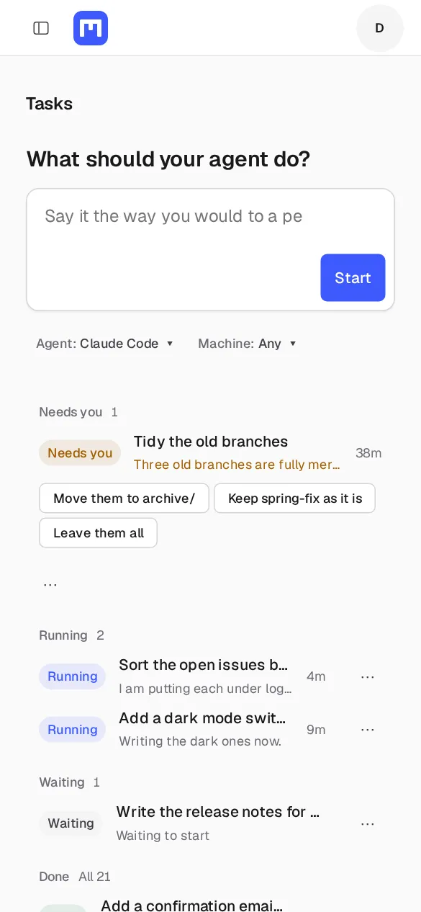
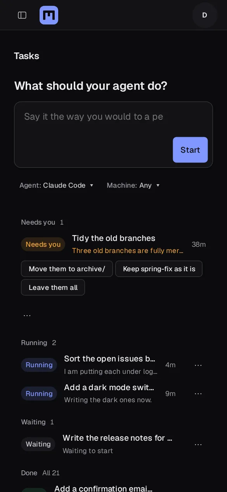

Maindesk
Computers for your AI agent.
Linux, Windows and a Mac in the cloud. Close your laptop and your agent keeps working. Answer it from your phone.
Open Maindesk

Maindesk
Linux, Windows and a Mac in the cloud. Close your laptop and your agent keeps working. Answer it from your phone.
Open Maindesk
